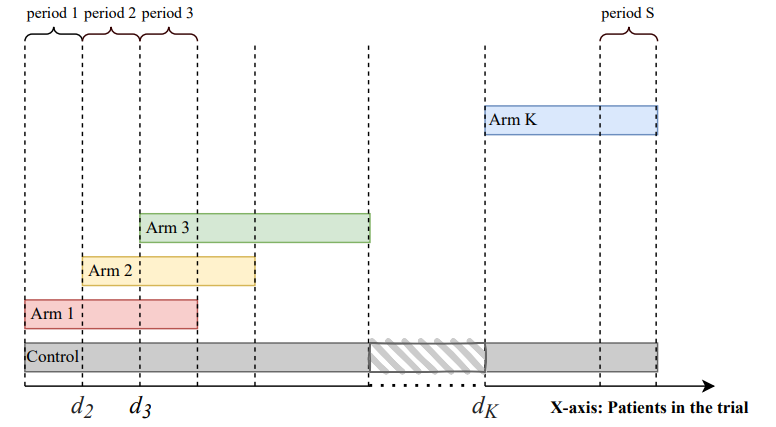

NCC package allows users to simulate platform trials and
to compare arms using non-concurrent control data.
Design overview
We consider a platform trial evaluating the efficacy of treatment arms compared to a shared control. We
assume that treatment arms enter the platform trial sequentially. In
particular, we consider a trial starting with one initial treatment arm,
where a new arm is added after every
patients have been
recruited to the trial (with
).
We divide the duration of the trial into periods, where the periods are the time intervals
bounded by times at which a treatment arm either enters or leaves the
platform.
The below figure illustrates the considered trial design.

Functions
This package contains the following functions:
Data generation
Main functions for data generation
-
datasim_bin()simulates data with binary outcomes -
datasim_cont()simulates data with continuous outcomes
Auxiliary functions for data generation
-
get_ss_matrix()computes sample sizes per arm and period -
linear_trend()is the linear time trend function, used to generate the trend for each patient -
sw_trend()is the step-wise time trend function, used generate the trend for each patient -
inv_u_trend()is the inverted-u time trend function, used generate the trend for each patient -
seasonal_trend()is the seasonal time trend function, used generate the trend for each patient
Data analysis
Treatment-control comparisons for binary endpoints
Frequentist approaches
-
fixmodel_bin()performs analysis using a regression model adjusting for periods -
fixmodel_cal_bin()performs analysis using a regression model adjusting for calendar time -
poolmodel_bin()performs pooled analysis -
sepmodel_bin()performs separate analysis -
sepmodel_adj_bin()performs separate analysis adjusting for periods
Bayesian approaches
-
MAPprior_bin()performs analysis using the MAP prior approach -
timemachine_bin()performs analysis using the Time Machine approach
Treatment-control comparisons for continuous endpoints
Frequentist approaches
-
fixmodel_cont()performs analysis using a regression model adjusting for periods -
fixmodel_cal_cont()performs analysis using a regression model adjusting for calendar time -
gam_cont()performs analysis using generalized additive model -
mixmodel_cont()performs analysis using a mixed model adjusting for periods as a random factor -
mixmodel_cal_cont()performs analysis using a mixed model adjusting for calendar time as a random factor -
mixmodel_AR1_cont()performs analysis using a mixed model adjusting for periods as a random factor with AR1 correlation structure -
mixmodel_AR1_cal_cont()performs analysis using a mixed model adjusting for calendar time as a random factor with AR1 correlation structure -
piecewise_cont()performs analysis using discontinuous piecewise polynomials per period -
piecewise_cal_cont()performs analysis using discontinuous piecewise polynomials per calendar time -
poolmodel_cont()performs pooled analysis -
sepmodel_cont()performs separate analysis -
sepmodel_adj_cont()performs separate analysis adjusting for periods -
splines_cont()performs analysis using regression splines with knots placed according to periods -
splines_cal_cont()performs analysis using regression splines with knots placed according to calendar times
Bayesian approaches
-
MAPprior_cont()performs analysis using the MAP prior approach -
timemachine_cont()performs analysis using the Time Machine approach
Running simulations
-
all_models()is an auxiliary wrapper function to analyze given dataset (treatment-control comparisons) with multiple models -
sim_study()is a wrapper function to run a simulation study (treatment-control comparisons) for desired scenarios -
sim_study_par()is a wrapper function to run a simulation study (treatment-control comparisons) for desired scenarios in parallel
Visualization
-
plot_trial()visualizes the progress of a simulated trial
For a more detailed description of the functions, see the vignettes in the R-package website (https://pavlakrotka.github.io/NCC/).
Installation
To install the latest version of the NCC package from
Github, please run the following code:
# install.packages("devtools")
devtools::install_github("pavlakrotka/NCC", build_vignettes = TRUE)Documentation
Documentation of all functions as well as vignettes with further description and examples can be found at the package website: https://pavlakrotka.github.io/NCC/
References
[1] Bofill Roig, M., Krotka, P., et al. “On model-based time trend adjustments in platform trials with non-concurrent controls.” BMC medical research methodology 22.1 (2022): 1-16.
[2] Lee, K. M., and Wason, J. “Including non-concurrent control patients in the analysis of platform trials: is it worth it?.” BMC medical research methodology 20.1 (2020): 1-12.
[3] Saville, B. R., Berry, D. A., et al. “The Bayesian Time Machine: Accounting for Temporal Drift in Multi-arm Platform Trials.” Clinical Trials 19.5 (2022): 490-501
Funding
EU-PEARL (EU Patient-cEntric clinicAl tRial pLatforms) project has received funding from the Innovative Medicines Initiative (IMI) 2 Joint Undertaking (JU) under grant agreement No 853966. This Joint Undertaking receives support from the European Union’s Horizon 2020 research and innovation programme and EFPIA and Children’s Tumor Foundation, Global Alliance for TB Drug Development non-profit organisation, Spring works Therapeutics Inc. This publication reflects the authors’ views. Neither IMI nor the European Union, EFPIA, or any Associated Partners are responsible for any use that may be made of the information contained herein.